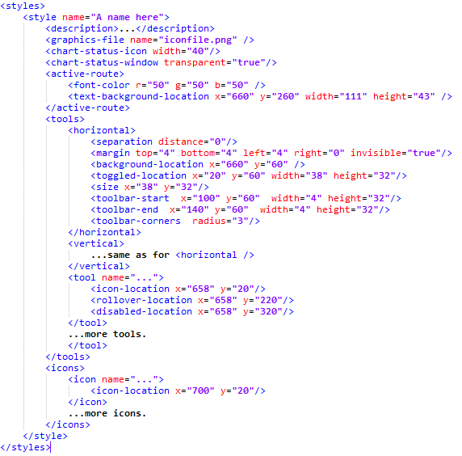

User Interface Styling
The Style Manager allows you to modify many aspects of the OpenCPN user interface:
-
The toolbar icons, background and shape.
-
Which tools appear in the toolbar.
-
The size and background of the chart status bar.
-
The background of the active route window.
Configuration files
When OpenCPN starts it will look for files named styleXXX.xml (where
the XXX means that any text is allowed here) in the uidata
subdirectory of the installation, and also in the user settings
directory (** ~/.opencpn *under Linux).
Each style.xml file defines one or several styles. The overall structure
of the file should look like this:

All bitmaps that the style needs are defined in a PNG file, which is
named in the * <graphics-file>** tag. The various <xxx-location> tags
refer to bitmap locations in this file. Locations are in X/Y coordinates
with the upper left corner as (0,0) and with positive Y downwards. This
file should be a 24 bit PNG. Transparency is fully supported, you can
use semitransparent icons and backgrounds to combine various effects.
The <tools> tag contains overall parameters for the <horizontal>
and <vertical> versions of the toolbar. This makes it possible to have
non-square buttons and still have the toolbar nicely rendered in both
orientations. The separation distance is the separation in pixels
between two toolbar buttons. When using non-square buttons the tool icon
might have different positions on the background for horizontal and
vertical. In this case, position the icons correctly for the horizontal
case, and then specify the offset for the vertical case using the tag
<icon-offset x="…" y="…" /> where X/Y are in pixels and are
allowed to be negative.
The margins are the margins around the outside, measured in pixels. The
margin can also be made transparent. With a transparent toolbar the
window edge snap will have a space between the window edge and the
buttons.
<background-location> and <toggled-location> should provide two
different backgrounds, one for the non-toggled and one for the toggled
(or pressed) state of the button. The toggled background is allowed to
be larger (but not smaller) than the no-toggled. If you use this
feature, make sure to specify enough spacing and margins to render the
larger background properly.
The <size>tag specifies a default size for tools, but this can be
overridden for an individual tool in its own tag.
The toolbar can be further styled with nice looking start and end images
using the <toolbar-start / end > tags. These are drawn on top of the
other graphics.
The <toolbar-corners> tag allows you to specify the corner radius of
the toolbar. NB! Rounded corners are only visible if you use
transparent margins.
-
<tool>is an item in the toolbar. It should provide three icons: A "normal" one plus the rolled over and disabled states. If you wish to hide a certain tool in your style you can specify the <hide-in-toolbar/>**tag for it.
-
<icon>**is a general purpose icon, not used in the toolbar. Cursors and waypoint markers are examples of this type of icon. It has only one state.
Tool names and plug-ins
The standard OpenCPN tools have names, which you can easily get by
looking at one of the default installed styles.
Plug-ins are styled based on their "common name". If your style provides a tool for the plug-in, that will have priority over any icons provided by the plugin itself. But for plug-ins that use their icons as a means of communicating status, the plug-ins icon will again get priority. (World Magnetic Model and Radar Overlay are examples of the latter).